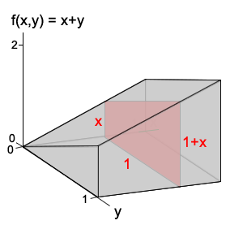

The conditional distribution of one variable, given that the other is known to be a particular value, can be defined in a similar way to our earlier definition for bivariate discrete distributions. The interpretation is similar to that of conditional probability functions for discrete random variables.
Definition
The conditional distribution of \(Y\) given \(X=x\) is the distribution with probability density function
\[ f_{Y \mid X=x}(y) \;\;=\;\; \frac{f(x,y)}{f_X(x)} \]The shape of this conditional distribution is that of a slice through the joint pdf at \(X=x\), but it is scaled to have unit area by dividing by the area of the slice.
Example
The random variables \(X\) and \(Y\) have joint probability density function
\[ f(x,y) \;=\; \begin{cases} x+y & \quad\text{if }0 \lt x \lt 1 \text{ and }0 \lt y \lt 1 \\ 0 & \quad\text{otherwise} \end{cases} \]What is the conditional pdf of \(Y\), given that \(X = x\)?
What is the probability that \(Y\) is more than 0.5, given that \(X\) is 0.7?
The following diagram again shows the joint pdf.

The red area is the marginal pdf of \(X\),
\[ f_X(x) \;=\; x + \frac 1 2 \qquad \text{for } 0 \lt x \lt 1 \]The conditional pdf of \(Y\), given that \(X=x\) is the joint pdf, divided by this,
\[ f_{Y \mid X=x}(y) \;=\; \frac {x+y}{x + \frac 1 2} \qquad \text{for } 0 \lt y \lt 1 \]where \(x\) is treated as a known constant.
Given that \(X = 0.7\), the conditional pdf of \(Y\) is
\[ f_{Y \mid X=0.7}(y) \;=\; \frac {0.7+y}{1.2} \qquad \text{for } 0 \lt y \lt 1 \]From this, we can evaluate
\[ \begin{align} P(Y \gt 0.5 \mid X=0.7) \;&=\; \int_{0.5}^1 \frac {0.7+y}{1.2} \;dy \\ &=\; \frac{1}{1.2} \left[0.7y + \frac{y^2}{2}\right]_{0.5}^1 \\ &=\; \frac{1}{1.2} \left(0.7 + \frac 1 2 - 0.7\times 0.5 - \frac{0.25}{2}\right) \\ &=\; 0.604 \end{align} \]